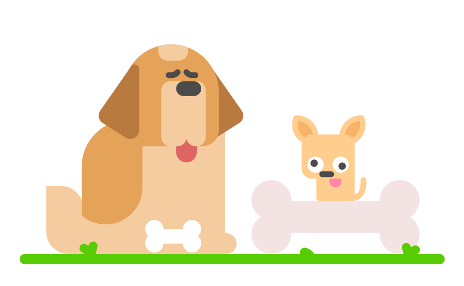
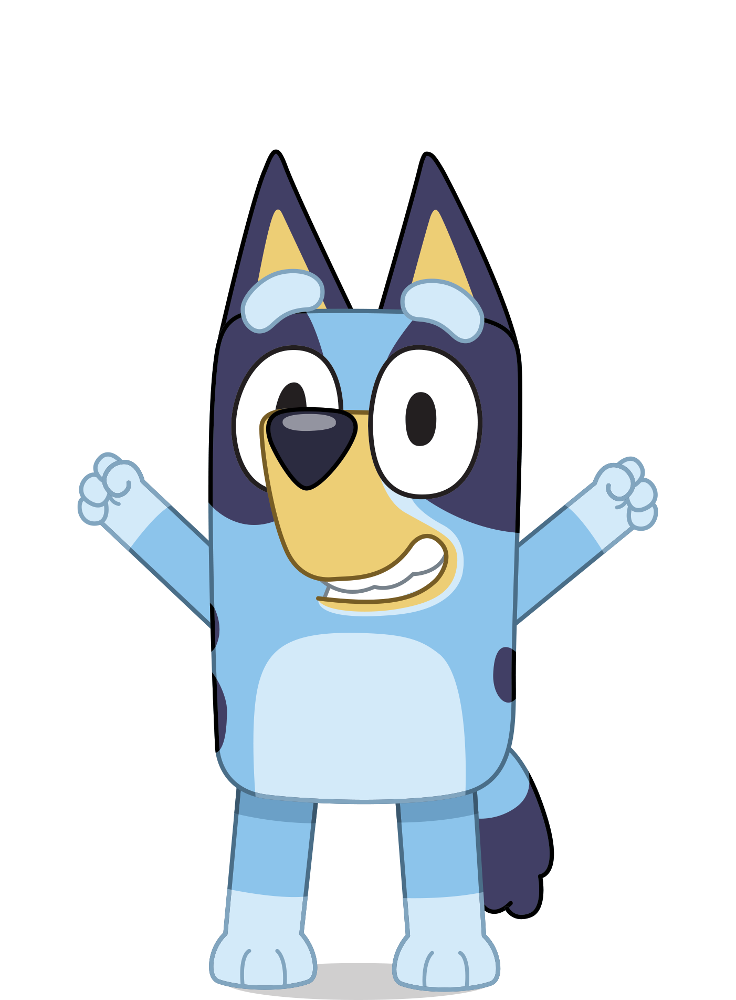
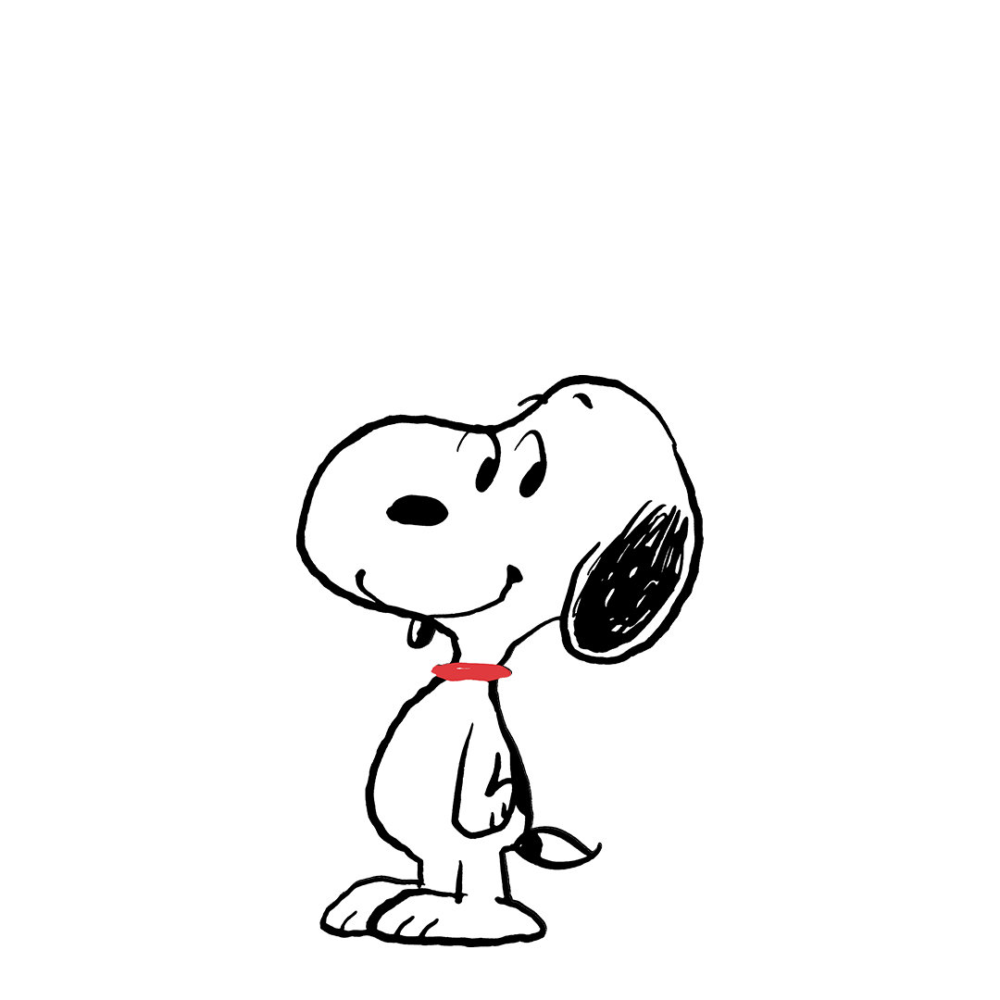
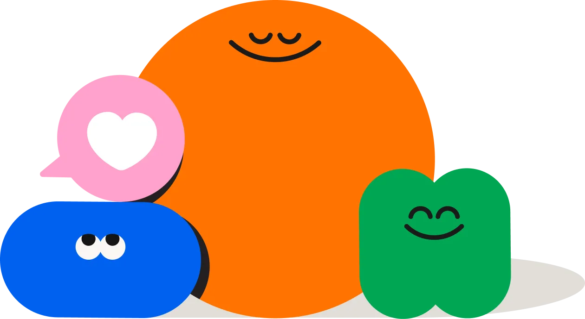
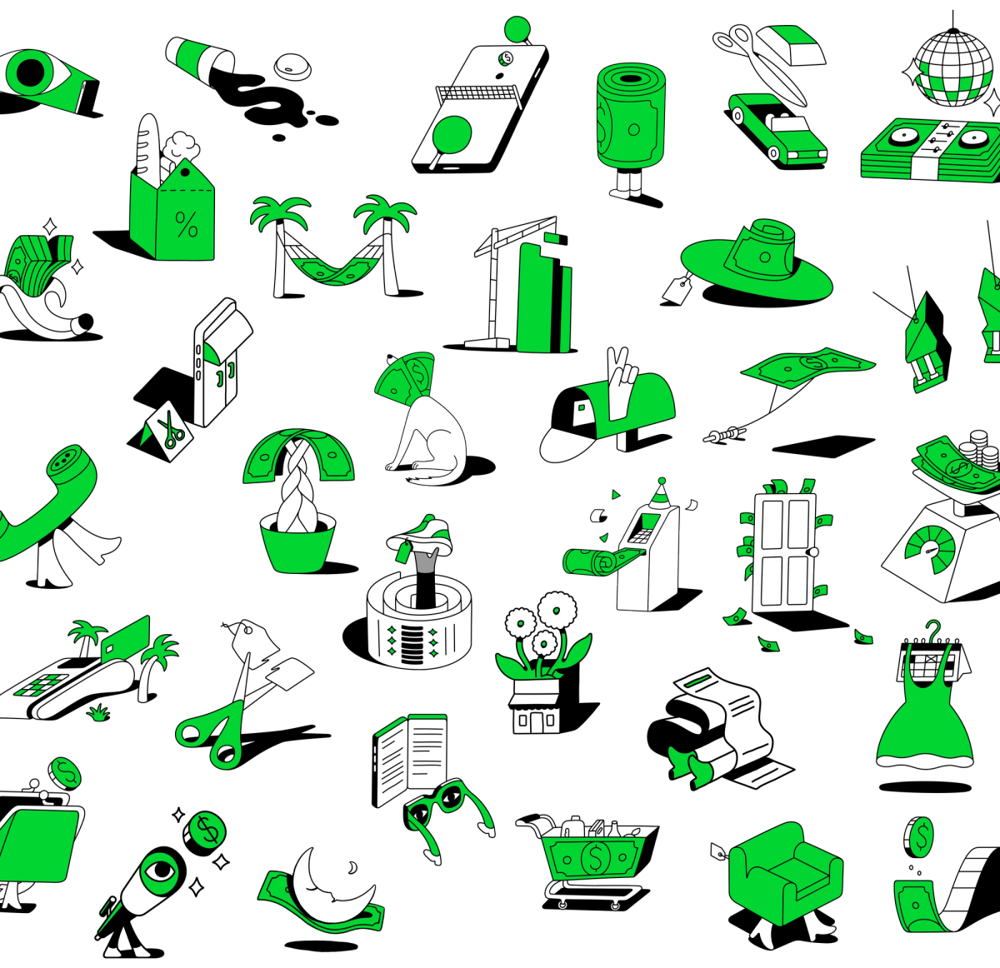
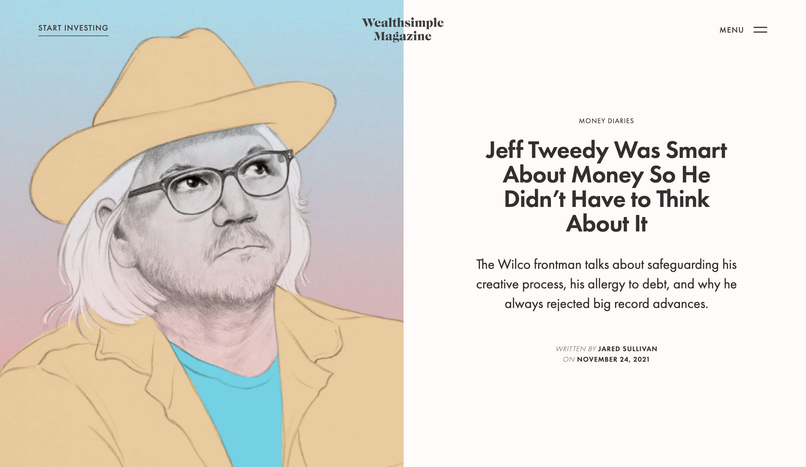
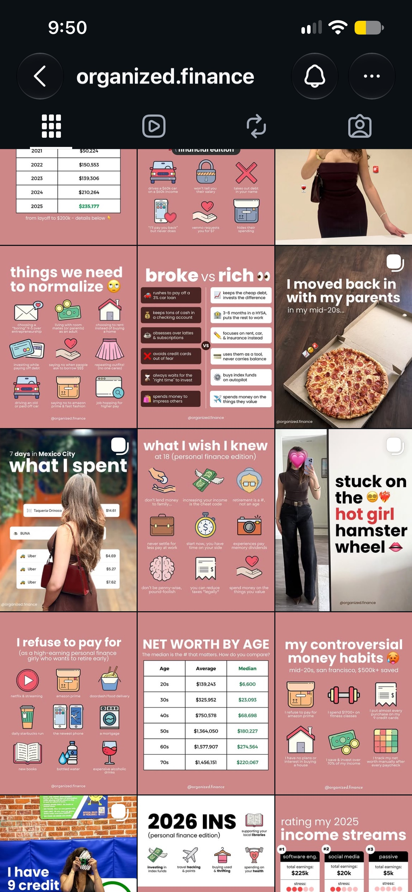
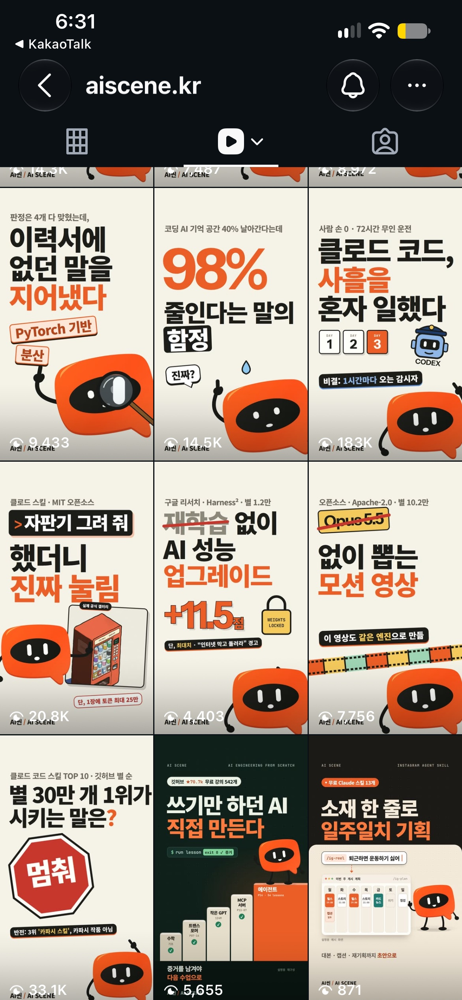

01 · 원본 레퍼런스Duolingo기본 도형과 읽히는 실루엣두 강아지의 귀·주둥이·크기 차이를 간단한 도형으로 구별한다. 하마의 큰 귀와 작은 몸도 이런 식으로 정리할 수 있다.2026-11-02출처 열기 ↗
02 · 원본 레퍼런스Bluey강아지의 몸 구조와 귀 위치몸통·팔다리의 연결이 명확하다. 의인화하더라도 동물의 무늬와 실루엣이 유지되는지 비교한다.2026-11-02출처 열기 ↗
03 · 원본 레퍼런스Snoopy적은 선으로 표정·태도 전달털 표현과 재질을 줄여도 귀·코·자세로 캐릭터가 읽힌다. 상반신·옆모습·표정이 먼저다.2026-11-02출처 열기 ↗
04 · 원본 레퍼런스Headspace친근한 설명용 형태표정과 둥근 도형으로 장면의 감정을 전달한다. 돈 설명에서도 복잡한 기계 대신 익숙한 사물을 활용하는 방향.2026-11-02출처 열기 ↗
05 · 원본 레퍼런스Cash App / BUCK금융 소재를 위한 그림 체계동전·기기·문서 같은 물체를 일관된 선과 투시로 묶은 라이브러리를 볼 수 있다. 하마에도 돈 공부 소품 체계가 필요하다.2026-11-02출처 열기 ↗
06 · 원본 레퍼런스Wealthsimple / Palesa돈 이야기의 에디토리얼 화면일러스트와 제목이 각자 자리를 가진다. 하마 여정·실수·결산도 캐릭터를 과하게 크게 쓰지 않고 이야기 중심으로 구성할 수 있다.2026-11-02출처 열기 ↗
07 · 원본 레퍼런스organized.finance여정과 반복 카드기존 캡처에서 생활 사진·숫자 카드·반복되는 정보 화면의 조합을 비교했다. 주간 결산과 실제 기록의 정보 구조 참고.기존 10/27 캡처. 현재 피드·지표 미확인출처 열기 ↗
08 · 원본 레퍼런스aiscene.kr캐릭터를 반복하는 피드기존 캡처의 주황 마스코트와 큰 제목의 반복을 확인했다. 작은 크기에서도 브랜드가 식별되는지 참고.기존 10/27 캡처. 현재 피드·지표 미확인출처 열기 ↗